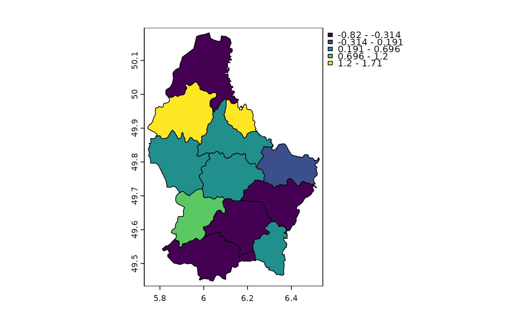

Spatial autocorrelation
autocor.RdCompute spatial autocorrelation for a numeric vector or a SpatRaster. You can compute standard (global) Moran's I or Geary's C, or local indicators of spatial autocorrelation (Anselin, 1995).
Arguments
- x
numeric or SpatRaster
- w
Spatial weights defined by or a rectangular matrix. For a SpatRaster this matrix must the sides must have an odd length (3, 5, ...)
- global
logical. If
TRUEglobal autocorrelation is computed instead of local autocorrelation- method
character. If
xis numeric or SpatRaster: "moran" for Moran's I and "geary" for Geary's C. Ifxis numeric also: "Gi", "Gi*" (the Getis-Ord statistics), locmor (local Moran's I) and "mean" (local mean)
Details
The default setting uses a 3x3 neighborhood to compute "Queen's case" indices. You can use a filter (weights matrix) to do other things, such as "Rook's case", or different lags.
See also
The spdep package for additional and more general approaches for computing spatial autocorrelation
References
Moran, P.A.P., 1950. Notes on continuous stochastic phenomena. Biometrika 37:17-23
Geary, R.C., 1954. The contiguity ratio and statistical mapping. The Incorporated Statistician 5: 115-145
Anselin, L., 1995. Local indicators of spatial association-LISA. Geographical Analysis 27:93-115
https://en.wikipedia.org/wiki/Indicators_of_spatial_association
Examples
### raster
r <- rast(nrows=10, ncols=10, xmin=0)
values(r) <- 1:ncell(r)
autocor(r)
#> lyr.1
#> 1.117188
# rook's case neighbors
f <- matrix(c(0,1,0,1,0,1,0,1,0), nrow=3)
autocor(r, f)
#> lyr.1
#> 1.25
# local
rc <- autocor(r, w=f, global=FALSE)
### numeric (for vector data)
f <- system.file("ex/lux.shp", package="terra")
v <- vect(f)
w <- relate(v, relation="touches")
# global
autocor(v$AREA, w)
#> [1] -0.1531971
# local
v$Gi <- autocor(v$AREA, w, "Gi")
plot(v, "Gi")
